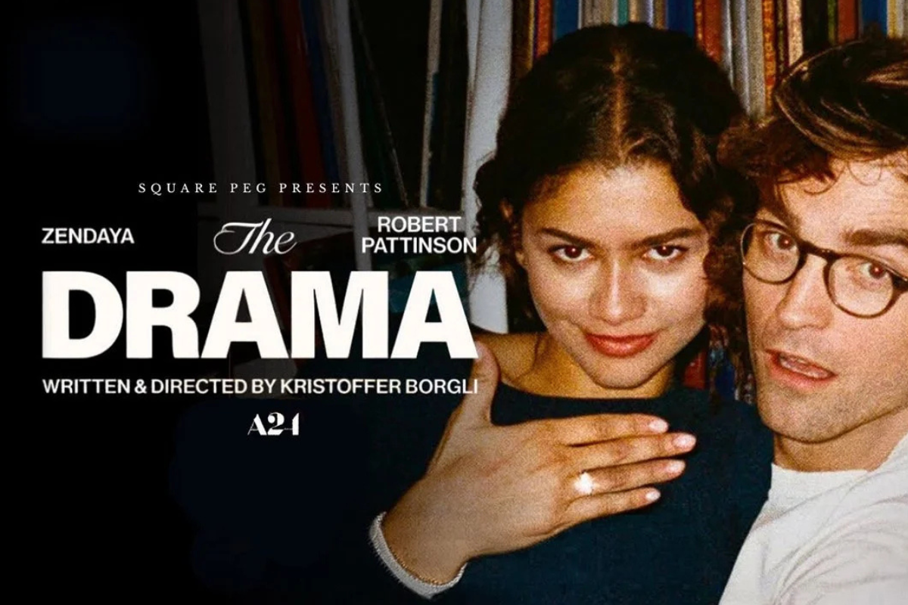

Novo filme da A24
Na tela, vemos um casal que parece perfeito e vive um grande amor. No entanto, a trama esconde camadas sombrias que transformam o romance em algo bizarro. Robert Pattinson (The Batman) está incrível e mostra um lado muito instável. Ao mesmo tempo, Zendaya (Duna) brilha demais e entrega uma atuação impecável e cheia de mistério. Com certeza, a conexão entre os dois é o que nos mantém hipnotizados.
A produção mexe com o público porque foge de qualquer clichê que você já viu. Além disso, a história trata de temas pesados com uma coragem absurda. Todavia, o que mais choca é a surpresa que o roteiro guarda para o espectador. Dessa forma, fica impossível prever o final ou desgrudar os olhos da tela. É um filme feito para incomodar e fazer a gente pensar por dias.
Por fim, o encerramento da história deixa muita margem o espectador tirar as próprias conclusões. Embora o final seja polêmico, ele mostra uma cumplicidade bem doentia entre o casal e esse pacto entre eles é a parte que mais gera debate após a sessão.
